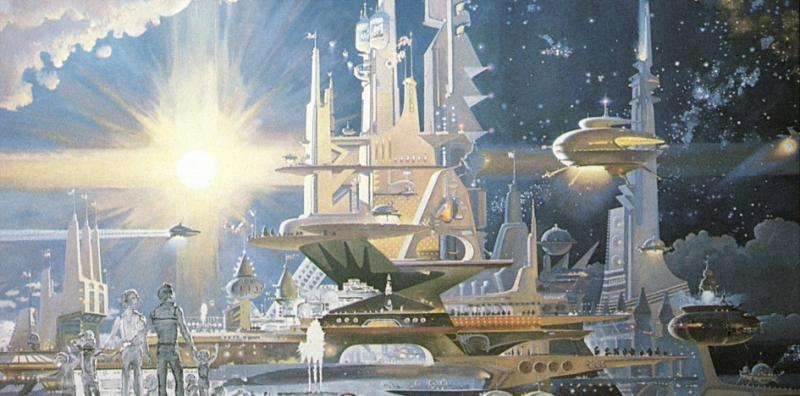

Introduction
Lunar Foundation is a hard sci-fi story-telling computer game about development of the fictional secret scientists conspiracy society in alternative history universe.
The game plot aims to spread certain scientific, engineering, social and phylosophical ideas. It lasts player through the partially predefined scenario letting him or her to make decisions in the key points of scenario to vary the plot and to achieve the final goal. As such the game represents a mixture of role-playing and strategic game genres where the player's character has to interact and strategically planning his/her relations with the rest of the Community's non-human player members in order to develop the common good and to move it forward.
This document briefly represents the key concepts of the game, it's plot, game mechanics and some technical details of implementation. Certain concepts and design approaches are still a subject to rethink during development.
Motivation
Problem Overview
Being a big fan of the classic role playing games such as Fallout series and The Elder Scrolls I'm thinking about evolution of the genre. The core idea standing behind RPG is to explore big open world, discovering new places, meeting new characters, understanding connections between them, learning attractive storyline, and eventually assembling the puzzle of intersecting storytelling quests to rule the world. One of the primary motivation for the player is to build the avatar character for whom he plays whatever role he imaging through the system of leveling up of various skills and collecting unique game stuff. Starting from the nomad of no-name, but eventually becoming the greatest hero.
This form of game mechanic is very attractive because it creates an illusion of dynamically evolving world letting the player to take a part of it. However, once the player studied the game universe he starts realizing that the world is actually static. Whatever place he visits other non-human players play performance around the main character and for him personally. The player is able to change the plot based on decisions done in quests and dialogues, but a number of possible story branches is limited and eventually discovered completely. Such disappointment doesn't spoil the game per se, but it makes it lesser enjoyable than it could be if other characters would have their own freewill and could evolve independently too. Moreover, it could be even more attractive if other characters could be self-organizable, and be able to assamble new groups or tribes to do their own and unique stories, to manage communities themselve and even build new towns.
Let's take an example of the Vualt City from Fallout 2:

After the long journey through the post-apocalyptic wasteland consists of ruines and decadent surviving tribes, it is very impressive to encounter such miraculous well-built town. And even more impressive when the player realizes that it was built using super-power futuristic technology fitting just in a small case called GECK.
But what if the GECK wasn't completely exhausted by the Vault City citizens yet? What if they capable to keep developing the town, assembling new buildings and facilities, expanding town's territory, having continuous evolution of the community? I believe such thoughts come into mind to many players who walked through the game.
The later attempt towards this feature was presented in a sequel Fallout 4:
In Fallout 4 building mechanics was introduced as a mixture of Minecraft-like and tower-defense game mechanics, when the player is capable to build a small sattlement for a local community of NPCs to defend the community from raids and to grow it's primitive economics. What's bad about this approach, aside from the fact that the building components are not aligned by a grid, is:
- Contrary to Minecraft a number of components and their possible forms is limited.
- The player is also limited in a number of things he can rebuild inside the sattlement's borders. So the overall game world is still feeling static, and the manual build facility embeddings feel artificially too. The player is not able to reconstruct the entire game world as he does in Minecraft.
- Despite the fact that NPCs are able to do some jobs on their own, their behavior is very primitive and is still mostly driven by predefined quest scenarios.
- All facilities are built by the human player exclusively. Non-player characters are unable to design and develop.
As a result the game, in my opinion, feels incomplete as a building simulator and as a RPG both. And I think it was a direct consiquence of the mixture between game mechanics that don't fit well to each other. Even if Fallout 4 would be polished better, having blueprint like mechanics to design and develop buildings would feel boring and unnatural in RPG. Why? Because of the roots of these mechanics. Initially the idea of the blueprint-based control came from the strategy games. Both real-time strategies and city-building strategies.
In a strategy game the player has a full control over design of whatever he wants to build on the map. His only limits are common resources(that he also has a full control of) and the map layout limitations. But in general the player is capable to establish whatever he wants and whenever he wants to. So, what is the role of the player from the RPG point of view? A master of the in-game universe. He is no longer one of many between other NPC-units, he has a full control over them from the beginning. There is, generally speaking, no place for discovering and challanging individual characters as the player already rules them. As such attempts of direct embedding of strategical game mechanics into RPG games doesn't work.
Solution
Instead of building in different game mechanics driven by the player, let's simulate them by a non-playable characters driven by the game's engine artificial intelligence. This approach presumes that AI should be smart enough to simulate social interaction between all characters on the high level of realism. Every NPC should be able to analyse current game state, game world evolution history and his own history of interaction with other players. And be able to make individual unique dicisions based on this analysis and the unique character properties. The AI-driven NPCs should also be able to do a short-term and long-term strategy planning, to unite into groups, and to perform actions agreed upon group to build common projects including building up facilities, economics and politics, organizing production lines etc.
And the human-playable character can also influence these processes changing their direction in desirable way through dialogs with other characters, and by the quests completion. As such the gameplay should feel natural for the classic RPG set, but becomes much more deep and advanced once the player starts realizing gameplay mechanics and opening possibilitis. Building up the right relations between other characters, understanding their motives, strengths and weaknesses allows the player eventually reconstruct entire game world universe the way he wants to without the use of blueprints and other strategy games ordinary gameplay instruments.
This approach seem to be hard to achieve on acceptable level of realism for a first glance, but is doable when the model of interaction is well thought and designed. Such models will be described in the next sections of this Document.
Also it's worth to mention that this approach is not new. Attempts towards this idea in more trivial were introduced in some modern games including The Guild game series.
Plot and Setting
CAUTION: The following sections contain spoilers on the game primary storyline. You can skip it until the game released.
Backstory
The story line starts in the last decade of the XIX century. The secret conspiracy organization called Foundation was founded somewhere in the past of the XVIII century by a fictional character Alexander Ziolkowski, genious inventor, philosophist and professor of mathematics who applied strict mathematics methods to scientifically proof the decline of the future civilization. To prevent catastrophy scenario and to rescue mankind from extinction, he established secret organization based on the strong principals of faith in science and technology advance, and in faith of the man freewill to achieve this advance through the freedom of thinking, creativity and the freedom from prejudice.

Ziolkowski idea was to select and unite the most talanted and extraordinary people all around the world, to build up more advanced, liberal and humanity society that will be hidden from the rest of the world for a while, but one day reveal and lead the civilization.
To achieve their goals Foundation used to stick with certain organizational principals including conspiracy, hierarchical divsions and following a Code of Conduct. No one of the members know the rest of the members, only a few part of their working group. And only a few members of the top inner circle aware of the entire picture and involved in planning. Many of the members live normal life, have a family, friends, ordinary job, yet they also have secret life where they are taking part in Foundation's projects.
Foundation have extensive network of divisions around the world. All of the devisions are decorated as local firms, manufactures, banks and other organizations providing ordinary services, hiring labors unaware of Foundation. Usually only the top management and key persons are secret recruits of the organization. Thereby they are capable to perform instructions coming through the network of agents from the Foundation headquarters.
Due to the decenetralized nature of the Foundation organizational structure and high level of conspiracy, they are resistent to the most external threats, and have wide range of influence capabilities. However, Foundation doesn't use these capabilities to gain any forms of personal benefits for their members, or establishing world dominance. Their primary goal is to serve the pure knowledge and discovering secrets of nature. Since that Foundation's Code of Conduct forbids direct influention to the world policy and geopolitics. Instead they use their resources to secretly recruit new members by looking and patronaging for talanted children around the world regardless of their origins or social status, but based on their talants and potential. And letting them grow and realize their potential and creativity inside Foundation using their organization's resources.
By the virtue of this way Foundation has accumulated the most intelligent people around the world by the beginning of the XX century. And thanks to their genius they reached a number of significant scientific and engineering breakthroughs including such fields as Bioengineering, Medicine, Computer Systems, Aerospce Engineering and many other amazing achievements that outperform their generation for decades if not centuries.
Yet, despite their closeness and indifference to the external world fate, Foundation shared some of their knowledges and technologies in the past in order to gain material resources required for their research projects and organization's operational expenses. And some of their sharings had controversial consequences. Few know that a number of engineering breakthroughts in Great Britain in the XVIII were not developed, but revealed by secret members of Foundation. One consequence of this influence was beginning of the era of Industrial Revolution that eventually spreaded into other countries. Another, more frightening and dangerous consequence was a progress in military technology production that brought wars into a new level of violance, increasing human deaths worldwide multiple, and also indirectly damaging planet's ecology due to mass production polutions. These consequences outspoken controdicted of Foundation's humanity principals lying under the basis of their high goals set by Alexander Ziolkowski.
For some this was a clear evidance of self-fulfilling prophecy of Ziolkowski genius. Yet many were lesser sceptical which lead to even more tragical failed attempts in revealing of secrets of their knowledges in order to change the world for good, but everytime only increasing human suffering and death. Lessons were learned. Foundation became more caution and closed organization. However, whether they want it or not, the history continues to evolve. And eventually they will have to face the call of time that could destroy them and disclose their secrets brining the world to the point of a total disaster.
The Island
Foundation established their central base long time ago on the lone isolated island somewhere in Pacific Ocean yet hidden and undiscovered by the rest of civilization. The Island is a bastion of entire organization, where Foundation do their key researches, collecting and storing results, building up research labs and facilities, providing scientific experiments. Strategic planning and it's divisions management, logistics and secret operations on the mainland is also in charge by the Headquarters built on the Island.

There is a whole town built on the Island using entire range of the top engineer thinking reached by Foundation scientists, engineers and inventors. There are research labs, administrative and utility buildings, entertainments, medicine centers, residencies for the Island's permanent habitants and guests. The city is powered by electricity based on Nuclear energy, has magnetic levitation trains transportation network, electrocars, helicopters, supercomputer centers and computer networks. There is even some level of robotisation and automation. Yet, having all set of technology advances and high standars of living comfort for it's habitants in XIX century that is comparable to the rest of civilzation XXI century future level of progress, the town's planning policy still carying of the Island ecology combining urban facilities and leaving space for nature grow. Thereby the Island scientists town is a high tech, but green city.
One of the most remarkable projects of Foundation is a Space program finished just recently. These are just first steps in the aerospace engineering field done by Foundation, but they already built a cosmodrome on the Island and successfully launched several space missions to set orbital satellites establishing transcontinental radio communication used by Foundation divisions and agents.
Another remarkable facility is a Palace of Science – Foundation Headquarters administrative building, a place of the Foundation high council assembly, and a central storage of knowledge of all Foundation's inventions and discoveries. This is a heart of entire organization, and the most guarded place.
With all glorious achievements of Foundation, the Island is not a self-sufficient colony. Town's internal economy and Foundation's projects are heavily tied to deliveries from the external world through the network of mainland divisions. This includes produce or buy all sort of multi-step production line intermediate components required for specific project, to the habitant everyday supplies. Thanks to the high level of security standards and well-organized logistic system between Foundation's world-wide network of divisions built-in into the local regional economics of countries, Foundation is able to organize high technology mass production in decentralized fashion, but still keeping it secure. Such as each division framed to a local manufacture, assembling or buying one specific component of production line and sending it to the next division on the opposite side of the world. But each local manufacture labors unable to see the big picture, and as such unaware of the purpose of specific detail they are assembling. To them it looks like just an ordinary production order like any other order they normally fulfill. All intermediate components eventually came to the Island where local habitants assembling them to the final product.
Despite the extra complexity of logistic system and security expanses of Foundation this approach was quite efficient in the past, when the external world technologies and economics were pure developed. Because contrary to the external world they utilized advanced production approaches such as mass production much earlier than the external world invented it too.
In a nowadays highly conspirated Foundation world-wide production system efficiency has decreased dramatically. External civilization progress leads to grow of internaltional communications and trading. So, Foundation now has to spent up to 90-95% of it's world-wide divisions netwrok resources just to keep the system itself and the Island secure and hidden and preventing leakages. Foundation is now in stagnation and on the verge of fundamental crisis when they will not be able to maintain their conspiracy model, and eventually will be exposed.
Alexander Ziolkowski
Too few is known about Ziolkowski biography, nor about the first steps of Foundation establishing process. This information was erased for a reason. There is no end without beginning. That's a main property of infinity. Foundation was established to become an eternal force of the future civilization that will exist forever and will change humanity irreversibly. Specific names and personal cults don't make sense in context of the High Goal.
Yet, there are a few near speculative things about Ziolkowski that we know. He was born in a poor fisherman family of uncertain roots in the north of Russian Empire in the beginning of XVIII century, but demonstrated extraordinary talants in a wide range of fields from natural science to literature and arts from his childhood. He was never patronaged due to his lower social class belongingness, but thanks to his natural thirst to knowledge and the faith in his destiny, he gоt education in Russia, and later in Western Europe where he lived and worked for the rest of his life. Alexander Ziolkowski was a polymoth how did a number of breakthoughs including discovering atmosphere of Venus and asymmetric cryptography. But the most important one was discovering strict mathematic methods allowing prediction of the future of the human societies of the very high level of accuracy. As such the main prediction about the future civilization catastrophy decline was done, as well as prediction on the possible way of resolution through establishing Foundation.
Despite the strong mathematical proove of Ziolkowsky Theory and the high level of accuracy of it's predictions, there are a number of limitations:
- The theory allows to predict evolution of the human society and the key events of it's history, it doesn't predict fate of a single person.
- An accuracy of prediction violates if prediction become exposed before fulfillment. In other words early publishing of predictions changes history and makes prediction itself obsolete. As such it must be hidden for a while.
- However, in certain situations it is possible to predict exact consequences of changes in history of the society done by a single speach spreaded across the society.
The second rule concludes that Ziolkowsky Theory itself must be hidden after the first application. Otherwise, it makes possible for someone else to re-apply it again and get the results of predictions revealed beforehand, making them effectively obsolete. Since of that the knowledge about the Theory was erased too.
Due to speculative nature of this story there are rumors that Alexander Ziolkowsky never existed at all, and there was a group of people working under a single pseudonym. There are even more mysterious believes that this group might still exist inside Foundation as even more conspirated society that secretly watching for Foundation and changes it's fate in the crucial moments of it's history.
Whether it's true or not, no one doubts Ziolkowsky predictions truth because of the "Book Of Alexander Ziolkowski" owned by Foundation.
The book consists of a set of chapters encrypted with assymetric cryptography methods. Decryption of each chapter requires decryption of the previous chapter first. And hardness of decryption increasing from chapter to chapter. The first chapters were decrypted manually, in a nowadays they decrypting by Foundation supercomputers. Has to be mentioned that decryption process itself tends to be one of the driver of computer technology researches inside Foundation. Averagely Foundation decrypting each new chapter once per 40-50 years. Each chapter succssful decryption event attracts attention of entire society, and the chapter usually contains two things:
- It describes all remarkable events that happened with Foundation and the world for the previous period, including starting and ending of wars, exact changes in geopolitics, economics and technologies, exact results of succsess and fails in Foundation projects and operations. The description even contains quite short range of estimations of various metrics. And it never tells wrong information. Due to cryptography nature such results couldn't be falsify. And this is a clear and very impressive proovness of truth of the theory, and the plan and goal of Foundation for all members of the society.
- The second part of the chapter provides some advices for the future. The advices are usully formulated in a loose form. They don't contain specific recommendations or plans, and usually presume different interpretations.
The book was a main source of believes and hopes of entire society for centuries since the beginning of Foundation.

Foundation's Society
Due to the nature of Foundation's believes in humanity principals, strong science and research-driven basis, and also because of the clear purposes in preventing mankind future decline apocalypse described in the Book Of Ziolkowski, members of Foundation are ascets who dedicate their life in service of Foundation at first place, but denying primitive human passions and individualistic purposes. They are fascinated by the High Goal of Foundation, and their believes continuosly driven by Foundation miraculous achievements. Most of the memebers were thoroughly selected from the outside world, and they were indoctrinated in the secret society from their childhood, so their faith is sincerily coming from the very root of inside. Their society has a lot in common with religious cult. However, it's not religious at all. Instead their faith has strong scientific basis in all possible aspects. Collectivism and Socialism are more suitable terms to describe their internal doctrine.
There is no private property inside Foundation. All resources, infrastructure, facilities, final products and research results are "owned" by organization exclusively. Also, there is no internal currency too. The base goods such as food, accomodation, transportation, utilities and entertainment are shared equally between members regardless of their roles inside Foundation. Nevertheless the members of Foundation are highly motivated, organized and conscientious people to move the society forward and to grow common good.
Everybody has a freedom of action inside Foundation and an opportunity to implement their own ideas or to take a part of the other members projects. The society is mostly driven by initiatives coming from the bottom. Depending on one's capabilities to attract other with his own reputation and/or promising ideas he is able to assemble a group and get support in resources from Foundation to try scientific research or engineering project. The amount of invested resources usually depends on the number of supporting members and is growing as long as the project is showing successful intermediate results.
Aside from this there is one formal institution inside Foundation called Academy of Science responsible for general coordination of all parts of ogranization, resource management and judgment. Academy of Science is a council resides inside Foundation Headquartes on the Island and consits of the most respectful and trustful members of the society, and is assembled by a procedure of election once per 10 years. Academition status is a honored status received for extraordinary achievemets that lasts lifelong, and usually cannot be taken away.
It worth to mention that the entire population of the society is about a thousand of members world-wide only. Most of the members are working in the network of divisions on the mainland and visiting The Island from time to time. Only a few hundreds of members are permanent habitants of the Islands. As was mentioned earlier some of the members of Foundation have families and children, but they are not a part of the secret society, and they don't have any privileges too.
Since the population of the society relatively small and intelligent they have no issues with crime, and don't need police or formal jurisprudence. Controversal situations are judging by Academician council that is following Code of Conduct in general.
To sum up Foundation society consists of several groups:
- Recruiting candidates. Those who are under patronage of Foundation, but not actual members yet. Usually young people showing extraordinary abilities in various fields. They don't have access to organization secrets and plans. They are getting promoted once they prove their loyalty.
- Ordinary members working in Foundation divisions around the world.
- Permanent habitants of the Island.
- Academicians. The governance and the court of Foundation.

Narrative Summary
The core narrative of the plot and game mechanics under the hood aims to present the following ideas:
- Some people are capable to achieve much more advanced scientific and engineering research goals even by themself in one life's lifespan when they work in the right conditions.
- Existential Problem is resolvable in a pure materialistic way through immortalism. And this a good mindset candidate for one person's main life goal and the meaning of life.
- The entire material culture of humanity could be changed dramatically through the technology advances.
- Human talant and genius is independent from one's origins and social status. A genius person can be born in ordinary family.
- The Faith in High goal is a key to unite people. Even if the High goal is internally artifficial.
- Knowledge is a tool in right hands and a weapon in wrong hands.